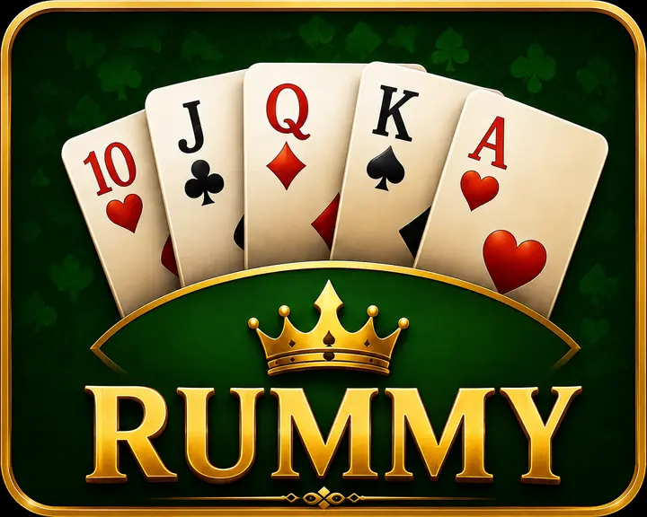

How to Play Indian Rummy
Learn how to arrange 13 cards into valid sequences and sets, use jokers correctly and make a valid declaration.

13-Card Indian Rummy Rules
Indian Rummy is a draw-and-discard card game. Each player receives 13 cards and tries to arrange every card into valid sequences and sets. On each turn, draw one card and discard one card. The goal is to complete a valid hand before the other players.
Valid declaration
A valid 13-card declaration requires at least two sequences. At least one sequence must be pure, and every remaining card must belong to another valid sequence or set.
Most important rule: Without a pure sequence, the hand cannot be declared valid even if all other cards form sets or impure sequences.
Draw and discard
Begin each turn by drawing one available card. End the turn by discarding one card, returning the hand to 13 cards. The table controls show which draw and discard actions are currently permitted.
Sequences, Sets and Jokers
| Group | Requirement | Example |
|---|---|---|
| Pure Sequence | At least three consecutive cards of the same suit without a joker substituting for a missing card. | 4-5-6 of hearts |
| Impure Sequence | Consecutive cards of the same suit completed with one or more permitted jokers. | 9-10-Joker-Q of clubs |
| Set | Three or four cards of the same rank in different suits, with permitted joker use. | 8 of hearts, clubs and spades |
Printed and wild jokers
A printed joker can substitute for a missing card in an impure sequence or set. The selected wild-joker rank can normally serve the same purpose. A joker used as a substitute does not create a pure sequence.
Ace placement
An ace can normally be low in A-2-3 or high in Q-K-A. It does not wrap around between king and two.
Set restrictions
Natural cards in a set share the same rank and use different suits. Repeating the same natural card does not create a valid set.
How a Rummy Round Works
- Choose how to play. Select Practice, Create Private Room, Join With Code or Public Online.
- Choose the table settings. Select the available table and turn-time options.
- Arrange the 13-card hand. Look first for a natural run that can become the required pure sequence.
- Draw one card. Take an available card that improves a sequence or set.
- Discard one card. Remove a card that is least helpful while avoiding useful cards for opponents.
- Group every card. Complete at least two sequences, including one pure sequence, and place all remaining cards into valid groups.
- Declare. Use the declaration control only after checking all 13 cards.
Indian Rummy Scoring
The winner of a valid round receives no penalty points. Other players receive penalty points for cards that are not protected by valid groups, subject to the table rules and any maximum penalty shown by the game.
| Card | Typical point value |
|---|---|
| Ace, King, Queen and Jack | 10 points each |
| Number cards | Printed face value |
| Printed or applicable wild joker | 0 points when treated as a joker |
The final result screen is authoritative for scoring, drops, invalid declarations and any table-specific caps.
Beginner Rummy Tips
- Prioritize the pure sequence before building multiple sets.
- Group and reorganize cards after every draw so incomplete combinations remain easy to see.
- Discard isolated high-value cards when they are unlikely to join a valid group.
- Use jokers to complete difficult impure sequences and sets rather than easy natural runs.
- Watch the discard pile to understand which ranks and suits opponents may be collecting.
- Recheck every card before declaring; one ungrouped or invalid card can invalidate the hand.
- Use Practice mode to learn within the selected 30-second or 70-second turn time.
Ways to Play
Practice
Learn against AI opponents using free practice chips.
Create Private Room
Create a room, choose its available settings and share the room code with friends.
Join With Code
Enter a valid private-room code to join friends.
Public Online
Join online matchmaking and play with other available Victory World players.
Indian Rummy FAQ
How many cards does each Indian Rummy player receive?
Each player receives 13 cards.
What is required for a valid declaration?
You need at least two sequences, including at least one pure sequence, and every remaining card must belong to a valid sequence or set.
What is a pure sequence?
It is a run of at least three consecutive cards of the same suit without using a joker as a substitute.
Can a joker be used in a pure sequence?
A joker cannot substitute for a missing card in a pure sequence. A naturally matching wild-joker card may belong to a natural run when used as its printed rank and suit under the table rules.
Can I practice Indian Rummy for free?
Yes. Victory World Practice mode uses free virtual chips with no cash value.